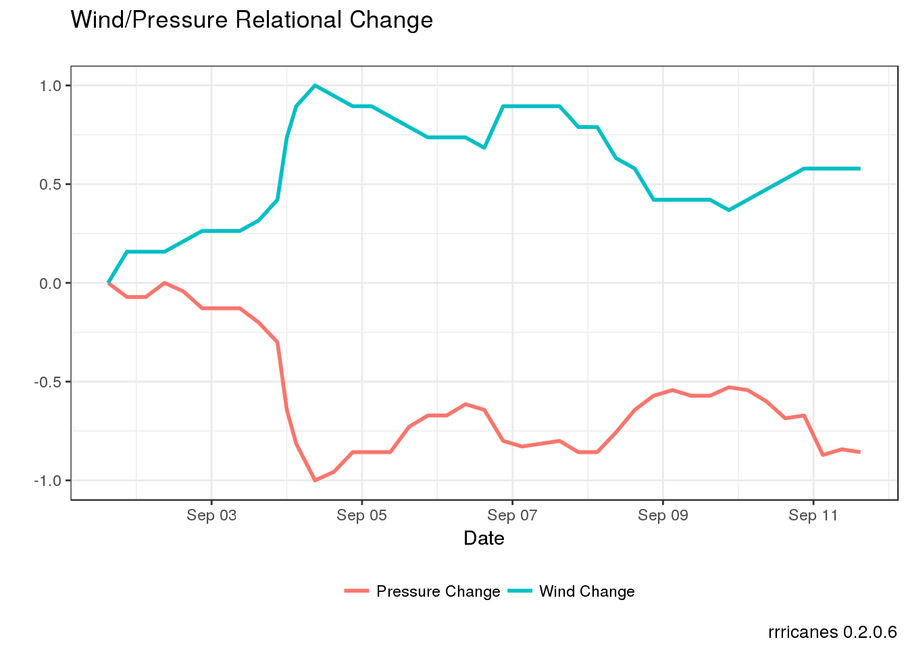
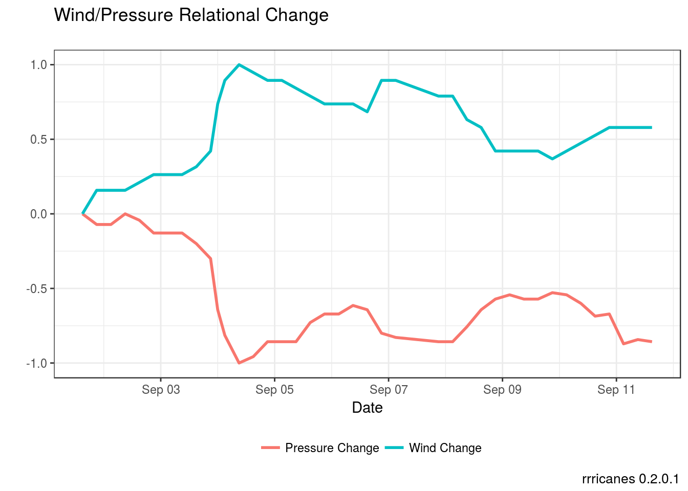

Wind and Pressure
Tim Trice
June 14, 2017
library(dplyr)
library(gganimate)
library(ggplot2)
library(rrricanes)
library(tidyr)# Unique ID of storm
key <- "AL092008"
# Advisory holding details we wish to plot
adv <- 42Data
# Loads AL2008_fstadv dataframe
# Please note load_storm_data is likely to be modified in future releases.
load_storm_data(years = 2008, basins = "AL", products = c("fstadv", "wndprb"))## [1] TRUEFilter out Hurricane Ike data.
fstadv <- AL2008_fstadv %>% filter(Key == key, Adv <= adv)Wind Profile
# Plot wind values
fstadv %>% ggplot(aes(x = Date, y = Wind)) +
geom_line() +
geom_point(aes(color = Status), size = 3) +
scale_y_continuous(name = "Wind (kts)") +
theme_bw() +
theme(legend.position = "bottom",
legend.box = "vertical") +
labs(title = "Wind Profile",
caption = sprintf("rrricanes %s", packageVersion("rrricanes")))
Pressure Profile
# Plot pressure values
fstadv %>% ggplot(aes(x = Date, y = Pressure)) +
geom_line() +
geom_point(aes(color = Status), size = 3) +
scale_y_continuous(name = "Pressure (mb)") +
theme_bw() +
theme(legend.position = "bottom",
legend.box = "vertical") +
labs(title = "Pressure Profile",
caption = sprintf("rrricanes %s", packageVersion("rrricanes")))
Wind/Pressure Relational Change
fstadv %>%
mutate(WindDist = (Wind - min(Wind))/(max(Wind) - min(Wind)),
PressDist = (Pressure - max(Pressure))/(max(Pressure) - min(Pressure))) %>%
gather(Var, Val, WindDist, PressDist) %>%
ggplot(aes(x = Date, y = Val, group = Var, color = Var)) +
geom_line(size = 1) +
scale_color_discrete(labels = c("Pressure Change", "Wind Change")) +
theme_bw() +
theme(legend.position = "bottom",
legend.title = element_blank()) +
labs(title = "Wind/Pressure Relational Change",
subtitle = "",
caption = sprintf("rrricanes %s", packageVersion("rrricanes")),
y = "")
Wind Radius
wr_animate <- tidy_wr(fstadv) %>%
gather(Quadrant, Radius, NE:NW) %>%
ggplot(aes(x = Quadrant, y = Radius, fill = factor(WindField),
frame = Adv)) +
geom_bar(stat = "identity", position = "identity", width = 1) +
guides(fill = guide_legend(title = "Wind Field")) +
coord_polar() +
theme(legend.position = "bottom") +
labs(title = "Wind Radius for Advisory",
subtitle = "Minimum sustained one-minute wind speed in knots",
caption = sprintf("rrricanes %s", packageVersion("rrricanes")),
y = "Radius (nm)")gganimate(wr_animate, "wind_radius.gif", ani.width = 750, ani.height = 750)## Executing:
## convert -loop 0 -delay 100 Rplot1.png Rplot2.png Rplot3.png
## Rplot4.png Rplot5.png Rplot6.png Rplot7.png Rplot8.png
## Rplot9.png Rplot10.png Rplot11.png Rplot12.png Rplot13.png
## Rplot14.png Rplot15.png Rplot16.png Rplot17.png Rplot18.png
## Rplot19.png Rplot20.png Rplot21.png Rplot22.png Rplot23.png
## Rplot24.png Rplot25.png Rplot26.png Rplot27.png Rplot28.png
## Rplot29.png Rplot30.png Rplot31.png Rplot32.png Rplot33.png
## Rplot34.png Rplot35.png Rplot36.png Rplot37.png Rplot38.png
## Rplot39.png 'wind_radius.gif'## Output at: wind_radius.gifOne of the interesting things to note about the image above; Hurricane Ike was known for it’s very large wind field (relatively speaking) which generated a larger and wider storm surge than normal for it’s classification. You can see this very well defined structure expansion between advisories 38 and 42.
This, in part, led to the modification of the Saffir Simpson Hurricane Scale.
the very large Hurricane Ike (with hurricane force winds extending as much as 125 mi from the center) in 2008 made landfall in Texas as a Category 2 hurricane and had peak storm surge values of about 20 ft. In contrast, tiny Hurricane Charley (with hurricane force winds extending at most 25 mi from the center) struck Florida in 2004 as a Category 4 hurricane and produced a peak storm surge of only about 7 ft. These storm surge values were substantially outside of the ranges suggested in the original scale. Thus to help reduce public confusion about the impacts associated with the various hurricane categories as well as to provide a more scientifically defensible scale, the storm surge ranges, flooding impact and central pressure statements are being removed from the scale and only peak winds are employed in this revised version – the Saffir-Simpson Hurricane Wind Scale. (Schott et al. 2012)
References
Schott, Timothy, Chris Landsea, Gene Hafele, Jeffrey Lorens, Arthur Taylor, Harvey Thurm, Bill Ward, Mark Willis, and Walt Zaleski. 2012. “The Saffir-Simpson Hurricane Wind Scale.” http://www.nhc.noaa.gov/pdf/sshws.pdf.